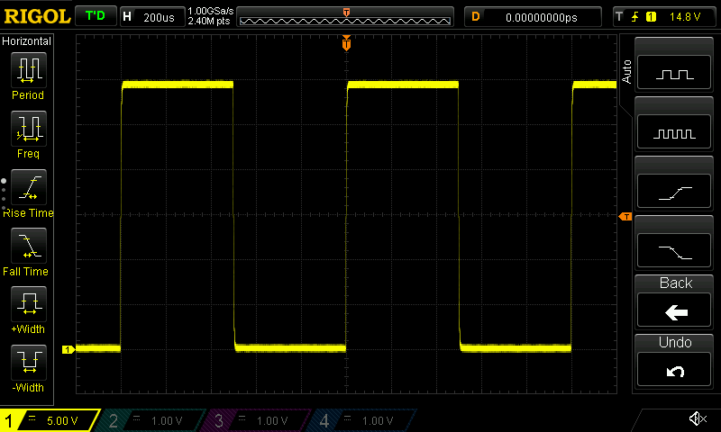
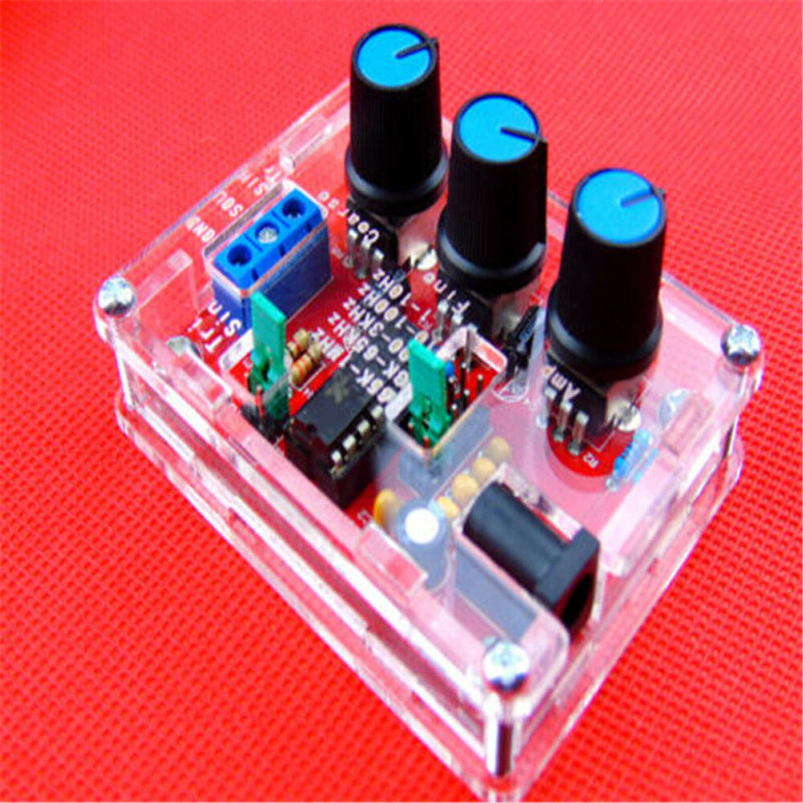
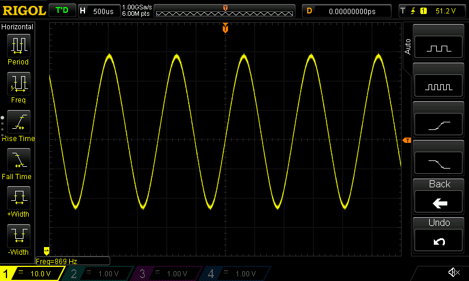
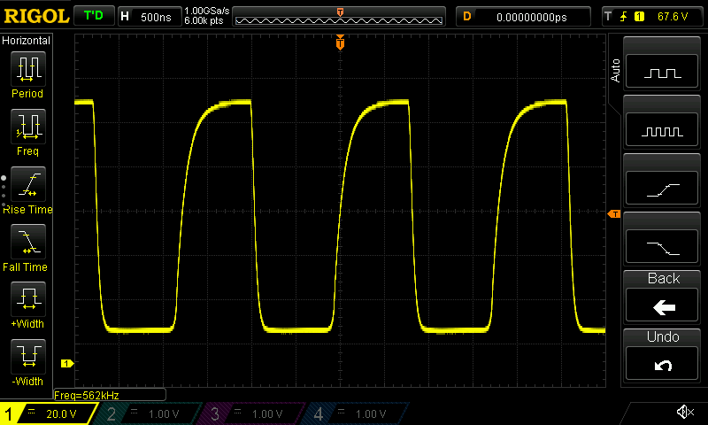
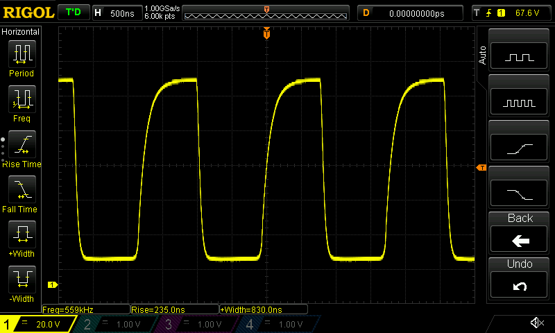

I recently acquired a Rigol DS1054Z oscilloscope. On researching the internet for tutorials I was disappointed, by the apparat lack of them. There are lots of tutorials on other scopes and generic tutorials but not much specific to the Rigol. So decided I'd better write some myself.
I'm planning a series of blog posts as I find out the things I can do with this scope. Lets make a start.
I'll be using these reference images to describe where controls are and where things are on the screen.
Figure 1

| Figure 2 | Figure 3 | Figure 4 | Figure 5 |
|---|---|---|---|
 |
 |
 |
 |
Figure 6

Using the Test signal
First off I'm going to test the scope works by using the inbuilt test signal. The scope outputs a basic square wave function on the metal terminals at the bottom right of the front panel (fig 1 - 18). Follow these steps:
- Connect the probe to channel 1.
- Make sure the switch on the probe is set to 1x.
- Connect the black ground clip of the probe to the bottom metal connector of the test signal (Figure 1 - 18).
- The probe comes with a plastic clip to allow it to stay connected to things. Insert the test clip onto the end of the probe and attach it to the top metal connector of the test signal.
- Press the Auto button (Figure 1 - 6). You should see a square wave pattern on the screen like the image below.

Using a signal generator
There isn’t a lot more we can do with the scope until we can provide it with some different signals. A signal generator is the perfect job for this, but they can be quite expensive (although if you have this scope maybe you also have a signal generator). However, there are some cheap alternatives available from ebay that can provide some interesting learning experiences. I won’t put a link here as they are likely to change, but they look a bit like this:
{width=50%}
They are not going to be the greatest bit of kit in the world (as we will see later on), but if you are just learning then they are great for the money. Alternatively, you can use a mobile phone app which will be described in the next post in this series. Now we will learn about some of the scopes features by connecting it to a signal generator. I will be using the ebay cheapo here.
Step 1: connect signal generator to scope
1. Connect it up to a power supply or a battery.
2. Feed some wires into the output terminals.
3. Connect the scope to these, the negative of the scope probe is the little wire with the crocodile clip attached.
4. Set the switch on the scope to 1X.
5. Set a frequency in the mid range of the signal generator. It doesn’t matter for now.
Step 2: find trace on scope
1. The easiest way to see the signal on the scope is to press the Auto button (figure 1 - 6). You should now see a trace on the scope. There will be more on manually setting the window parameters in later posts. For now the Auto button will work just fine.
2. The scope has several measurement functions accessed through buttons on the left of the screen (figure 1 - 1). Press the frequency button and you should see this value displayed on the bottom of the screen which should correspond to the value you set on the signal generator. See the image below.

Step 3: explore limits of the signal generator
1. Set the signal generator to its lowest setting.
2. Press the Auto button on the scope (figure 1 - 6).
3. You will probably find that the Auto setting struggles to find the wave form at low such low frequencies. Try turning the horizontal scale dial (figure 1-16, figure 4 bottom) in small increments until you see the waveform. You might also need to play with the vertical settings (figure 1- 15, figure 2). The wave form takes a while to update at low frequencies. More on manually setting the window in future posts.
4. Now change the setting to a square wave and set it to the highest possible frequency.
5. Press the Auto button (figure 1 - 6). You should a wave form like the upper image below.
6. Press the measurement button on the left (figure 1-1) for rise time and also width. Ideally for a square wave the rise time should as small a fraction of the width as possible. The signal generator is really only estimating a square wave by adding together sine waves. At high frequencies it can’t do this very well. If you look at the lower image below at the bottom of the screen you can see that the rise time is more than a quarter of the width for this waveform.
 
Step 4: moving the trace on the screen
1. Set the signal generator to any reasonable setting.
2. Press the Auto button so you can see the trace.
3. Sometimes we would like to zoom in horizontally to a trace. We can do this by turning the dial (figure 1 - 16, figure 4 bottom).
4. We might also want to move the trace left to right, for example to fit it with another trace. We can do this by tuning the dial (figure 1 - 16, figure 4 top ).
5. If we want to move the trace in the vertical direction we can do so by twisting dial (figure 1 - 15, figure 2 top).
6. We can also change the vertical scale by turning the dial (figure 1 -15, figure 4 bottom).
7. If you look at the bottom of the screen (figure 6 - 12) you should see the number of volts per division. There are divisions vertically on the screen so multiply this number by 8 to get the full difference from bottom to top of the screen.
8. If you look at the top of the screen (figure 6 - 5) you will see the time division. There are 12 divisions horizontally so multiply this number by 12 to get the full difference in time between the left and right of the screen.
In following posts we will look at a capacitor discharging and also calculate the speed of sound. If you have any other suggestions for things you’d like to see then use the comments below.
Comments